show/hide packages
library(tsap) # app package
library(palmerpenguins) # data
library(NHANES) # data
library(dplyr) # function
library(rlang) # traceback/stack trace
library(gt) # tablesInvestigating shiny bugs using call stacks, browser(), and tests
Martin Frigaard
June 23, 2023
This post is currently under development–thank you for your patience.
This is the fourth post in a series on testing shiny applications. I’ll cover using rlang::trace_back(), browser(), and unit/testServer() tests to debug shiny apps.
In a previous post, I covered writing tests for module server functions in tsap (testServer() app-package). I ended that post noting the bug below when running pkgDataApp():
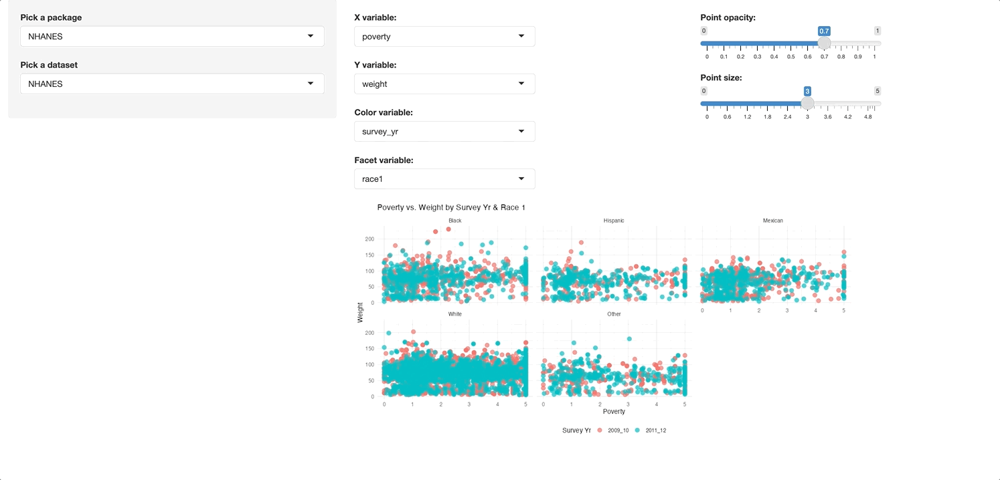
renderPlot() errorError in [[: Column 'race1' not found in '.data'The warning resolves itself without causing the application to crash, but it’s displayed in the UI, so leaving it is not an option. In this post, I’m going to discuss using the stack trace and browse() to debug a shiny app-package.
testServer() app-packageIf you’d like to follow along, you can download tsap here or install it using the following:
I’ll quickly review the contents of tsap. The R/ folder contains files for the modules:
Each module file has it’s own utility function file:
The module functions are split between the appUI() and appServer() functions.
R/
├── appServer.R # <- _server() module functions
├── appUI.R # <- _ui() module functions
└── pkgDataApp.R # <- standalone app functionpkgDataApp() is a stand-alone app function, which calls appUI() and appServer():
Each of the modules have tests in the tests/testthat/ folder:
tests/testthat/
├── test-mod_cols_server.R
├── test-mod_ds_server.R
├── test-mod_pkg_server.R
└── test-mod_plot_server.RAs do the module utility functions:
I’ve created the figure below to illustrate how the modules in pkgDataApp() work together:
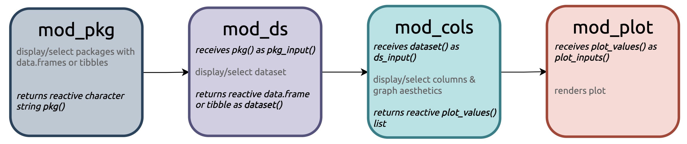
tsap modulestsap::pkgDataApp()As you can see, the modules are connected by a chain of reactive values, and each module returns a slightly more complicated reactive value (character -> data.frame/tibble -> list ).
mod_pkgmod_pkg module displays the packages with data.frames or tibbles (and returns the package as a reactive character string, pkg())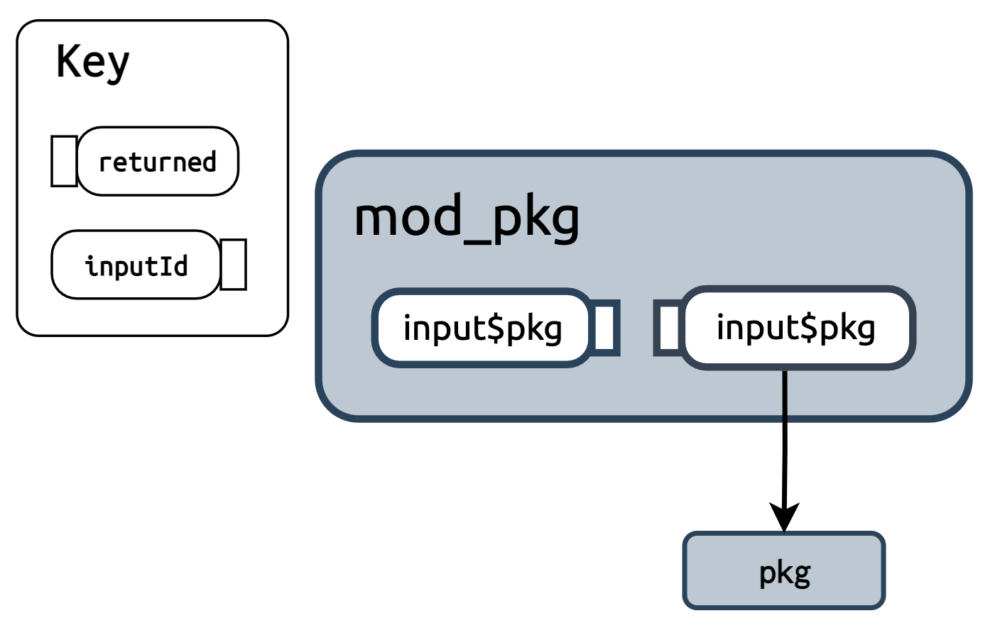
mod_pkgmod_pkg in pkgDataApp()mod_dsmod_ds renames pkg() as pkg_input() and uses it to update the selectInput() options for the selected package datasets (the selected dataset is returned as a reactive dataset())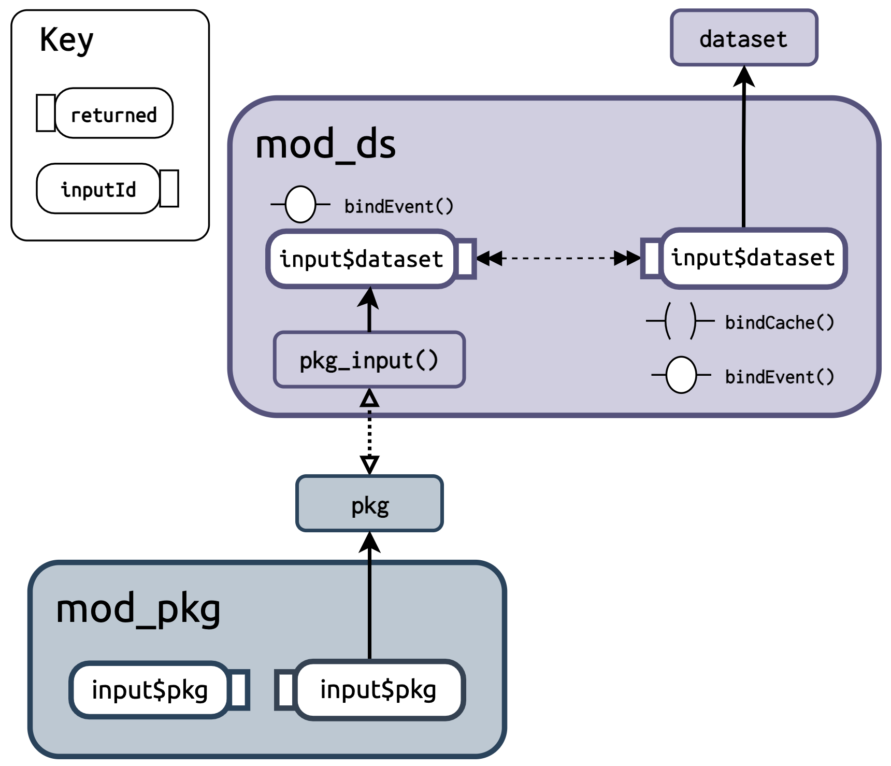
mod_dsmod_pkg and mod_ds in pkgDataApp()mod_colsmod_cols receives dataset() as ds_input() and updates the selectInput()s with the columns in the ds_input(). Columns are displayed by ‘type’ (i.e., two numeric columns (x and y), binary columns (color), and a facet column. Then ds_input(), the selected columns (x, y, color and facet) and graph aesthetics (size and alpha) are combined and returned as the reactive list plot_values()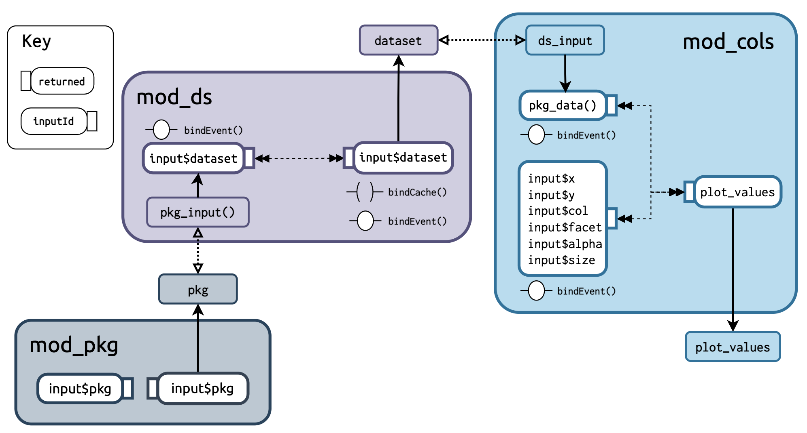
mod_colsmod_pkg, mod_ds, and mod_cols in pkgDataApp()mod_plotmod_plot uses plot_values() as plot_inputs() and a custom ggplot2 utility function (gg_color_scatter_facet()) to render the plot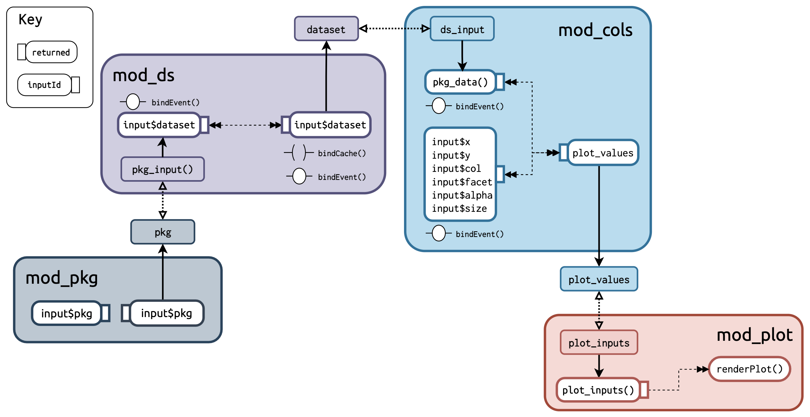
mod_plot in tsap::pkgDataApp()mod_pkg,mod_ds, mod_cols, and mod_plot modules in pkgDataApp()The ggplot2 function used to generate the plot (gg_color_scatter_facet()) is below:
gg_color_scatter_facet <- function(df, x_var, y_var,
col_var = NULL, facet_var = NULL,
...) {
# missing both color and facet vars
if (is.null(col_var) & is.null(facet_var)) {
ggplot2::ggplot(
data = df,
mapping = ggplot2::aes(
x = .data[[x_var]],
y = .data[[y_var]])
) +
ggplot2::geom_point(...) +
# add labels
ggplot2::labs(
title = make_x_y_title(
x = x_var, y = y_var),
x = stringr::str_replace_all(
snakecase::to_title_case(x_var), "_", " "
),
y = stringr::str_replace_all(
snakecase::to_title_case(y_var), "_", " "
)
) +
ggplot2::theme_minimal() +
ggplot2::theme(legend.position = "bottom")
# no facet, but has color
} else if (!is.null(col_var) & is.null(facet_var)) {
ggplot2::ggplot(
data = df,
mapping = ggplot2::aes(
x = .data[[x_var]],
y = .data[[y_var]])
) +
# add ... for alpha and size passed to points
ggplot2::geom_point(
ggplot2::aes(
colour = .data[[col_var]],
group = .data[[col_var]]),
...
) +
# add labels
ggplot2::labs(
title = make_x_y_color_title(
x = x_var, y = y_var, color = col_var),
x = stringr::str_replace_all(
snakecase::to_title_case(x_var), "_", " "
),
y = stringr::str_replace_all(
snakecase::to_title_case(y_var), "_", " "
),
color = stringr::str_replace_all(
snakecase::to_title_case(col_var), "_", " "
)
) +
ggplot2::theme_minimal() +
ggplot2::theme(legend.position = "bottom")
# no color, but has facet
} else if (is.null(col_var) & !is.null(facet_var)) {
ggplot2::ggplot(
data = df,
mapping = ggplot2::aes(
x = .data[[x_var]],
y = .data[[y_var]])
) +
# add ... for alpha and size passed to points
ggplot2::geom_point(...) +
# add facet layer
ggplot2::facet_wrap(ggplot2::vars(.data[[facet_var]])) +
# add labels
ggplot2::labs(
title = make_x_y_title(
x = x_var, y = y_var),
x = stringr::str_replace_all(
snakecase::to_title_case(x_var), "_", " "
),
y = stringr::str_replace_all(
snakecase::to_title_case(y_var), "_", " "
)
) +
ggplot2::theme_minimal() +
ggplot2::theme(legend.position = "bottom")
} else {
# has both color and facet vars
ggplot2::ggplot(
data = df,
mapping = ggplot2::aes(
x = .data[[x_var]],
y = .data[[y_var]])
) +
# points layer
# add ... for alpha and size passed to points
ggplot2::geom_point(
ggplot2::aes(
colour = .data[[col_var]],
group = .data[[col_var]]), ...
) +
# add facet layer
ggplot2::facet_wrap(ggplot2::vars(.data[[facet_var]])) +
# add labels
ggplot2::labs(title =
make_x_y_col_facet_title(x = x_var,
y = y_var,
color = col_var,
facets = facet_var),
x = stringr::str_replace_all(
snakecase::to_title_case(x_var), "_", " "
),
y = stringr::str_replace_all(
snakecase::to_title_case(y_var), "_", " "
),
color = stringr::str_replace_all(
snakecase::to_title_case(col_var), "_", " "
),
group = stringr::str_replace_all(
snakecase::to_title_case(facet_var), "_", " "
)
) +
ggplot2::theme_minimal() +
ggplot2::theme(legend.position = "bottom")
}
}During development, the warning below is printed to the Console when I change the package input of tsap::pkgDataApp():
# Warning: Error in [[: Column 'race1' not found in '.data'.
Below the warning, the Console also prints the following abbreviated numbered list of items:
Warning: Error in [[: Column `race1` not found in `.data`.
202: <Anonymous>
201: signalCondition
200: signal_abort
199: abort
198: abort_data_pronoun
197: data_pronoun_get
196: [[.rlang_data_pronoun
195: [[
194: eval_tidy
189: FUN
188: lapply
185: FUN
184: lapply
181: combine_vars
180: compute_layout
179: self$facet$compute_layout
178: setup
177: layout$setup
176: ggplot_build.ggplot
174: print.ggplot
169: func
167: f
166: Reduce
157: do
156: hybrid_chain
128: drawPlot
114: <reactive:plotObj>
98: drawReactive
85: renderFunc
84: output$plot-graph
3: runApp
2: print.shiny.appobj
1: <Anonymous>The output above is referred to as a stack trace (or traceback), which is a report that provides information about a function call (or sequence of calls) at a certain point. The numbered items are ‘frames’, and collectively they’re referred to as the ‘call stack’ or ‘stack frame’.
Believe it or not, the output shown above actually isn’t the full stack trace for the error–shiny performs some post-processing to trim it down. If you’d like to view the full stack trace for the warning, try setting options(shiny.fullstacktrace = TRUE) before running your application.
A stack trace is usually generated when an error occurs, and it gives developers a snapshot of the function calls preceding the error.
The output above is automatically returned to the Console while if you’re developing a shiny app in RStudio, but I’ll cover two methods for manually creating a stack trace from an error.
traceback()In base R, you can generate a stack trace by calling the traceback() function directly following the error.
I’ll use gg_color_scatter_facet() in the code chunk below, but I’ve written it to reproduce the error I’m seeing above (i.e., the variable arguments are from the NHANES::NHANES data, but the df argument has been changed to palmerpenguins::penguins).
I’ll pass the gg_color_scatter_facet() call in to the Console:
After the error, I call traceback():
The output from traceback() is below:
29: stop(fallback)
28: signal_abort(cnd, .file)
27: abort(msg, "rlang_error_data_pronoun_not_found", call = call)
26: abort_data_pronoun(x, call = y)
25: data_pronoun_get(x, i, call = I(call("[[", quote(.data), substitute(i))))
24: `[[.rlang_data_pronoun`(.data, "race1")
23: .data[["race1"]]
22: eval_tidy(facet, mask)
21: doTryCatch(return(expr), name, parentenv, handler)
20: tryCatchOne(expr, names, parentenv, handlers[[1L]])
19: tryCatchList(expr, classes, parentenv, handlers)
18: tryCatch(eval_tidy(facet, mask), ggplot2_missing_facet_var = function(e) NULL)
17: FUN(X[[i]], ...)
16: lapply(facets, eval_facet, data, possible_columns = possible_columns)
15: vapply(x, is.null, logical(1))
14: compact(lapply(facets, eval_facet, data, possible_columns = possible_columns))
13: FUN(X[[i]], ...)
12: lapply(data, eval_facets, facets = vars, possible_columns = possible_columns)
11: vapply(x, is.null, logical(1))
10: compact(lapply(data, eval_facets, facets = vars, possible_columns = possible_columns))
9: combine_vars(data, params$plot_env, vars, drop = params$drop)
8: compute_layout(..., self = self)
7: self$facet$compute_layout(data, self$facet_params)
6: setup(..., self = self)
5: layout$setup(data, plot$data, plot$plot_env)
4: ggplot_build.ggplot(x)
3: ggplot_build(x)
2: print.ggplot(x)
1: (function (x, ...)
UseMethod("print"))(x)The output from traceback() is a pairlist, and it contains the “stack of the last uncaught errors.”
traceback() to .Rprofile
If you’d like to view the traceback() output whenever an error occurs, you can add the following to your .Rprofile:
Read more debugging tips in the Posit support documentation.
If the output from traceback() is too large to read in the Console, I’ll store it and use grep() or stringr::str_view_all() to explore its contents:
Below I’ll narrow the stack trace down to the terms I see in the UI (like .data and race1):
rlang::last_trace()When I entered the previous call to gg_color_scatter_facet() in the Console, there was a suggestion to run rlang::last_trace():
last_trace() is similar to traceback(), but prints the stack trace in a hierarchical tree structure:
<error/rlang_error_data_pronoun_not_found>
Error in `.data[["race1"]]`:
! Column `race1` not found in `.data`.
---
Backtrace:
▆
1. ├─base (local) `<fn>`(x)
2. ├─ggplot2:::print.ggplot(x)
3. │ ├─ggplot2::ggplot_build(x)
4. │ └─ggplot2:::ggplot_build.ggplot(x)
5. │ └─layout$setup(data, plot$data, plot$plot_env)
6. │ └─ggplot2 (local) setup(..., self = self)
7. │ └─self$facet$compute_layout(data, self$facet_params)
8. │ └─ggplot2 (local) compute_layout(..., self = self)
9. │ └─ggplot2::combine_vars(data, params$plot_env, vars, drop = params$drop)
10. │ ├─ggplot2:::compact(lapply(data, eval_facets, facets = vars, possible_columns = possible_columns))
11. │ │ └─base::vapply(x, is.null, logical(1))
12. │ └─base::lapply(data, eval_facets, facets = vars, possible_columns = possible_columns)
13. │ └─ggplot2 (local) FUN(X[[i]], ...)
14. │ ├─ggplot2:::compact(lapply(facets, eval_facet, data, possible_columns = possible_columns))
15. │ │ └─base::vapply(x, is.null, logical(1))
16. │ └─base::lapply(facets, eval_facet, data, possible_columns = possible_columns)
17. │ └─ggplot2 (local) FUN(X[[i]], ...)
18. │ ├─base::tryCatch(eval_tidy(facet, mask), ggplot2_missing_facet_var = function(e) NULL)
19. │ │ └─base (local) tryCatchList(expr, classes, parentenv, handlers)
20. │ │ └─base (local) tryCatchOne(expr, names, parentenv, handlers[[1L]])
21. │ │ └─base (local) doTryCatch(return(expr), name, parentenv, handler)
22. │ └─rlang::eval_tidy(facet, mask)
23. ├─race1
24. ├─rlang:::`[[.rlang_data_pronoun`(.data, "race1")
25. │ └─rlang:::data_pronoun_get(...)
26. └─rlang:::abort_data_pronoun(x, call = y)Both traceback() and last_trace() print each preceding function call before the error. I prefer using rlang::last_trace() because I find the tree output to be easier to read. However, I usually follow the second piece of advice from the Console output and set drop to FALSE:
By default, last_trace() will drop technical function calls, but I like to see all of the calls in a stack trace, so I usually change drop to FALSE.
After changing drop to FALSE I can see one additional frame in the stack (I’ve omitted frames 1. through 22., but you can see frame 27. has been added below).
<error/rlang_error_data_pronoun_not_found>
Error in `.data[["race1"]]`:
! Column `race1` not found in `.data`.
---
Backtrace:
▆
23. ├─race1
24. ├─rlang:::`[[.rlang_data_pronoun`(.data, "race1")
25. │ └─rlang:::data_pronoun_get(...)
26. └─rlang:::abort_data_pronoun(x, call = y)
27. └─rlang::abort(msg, "rlang_error_data_pronoun_not_found", call = call)I generally try to write code that executes without errors, so the output from traceback() or last_trace() is always a little bewildering. I never know exactly what I’m looking for in the stack trace (if so, I would’ve written the code to avoid encountering it), but I like to start with a clear understanding of the behavior I’m expecting the function to perform.
In this case, I’m expecting the data (in mod_ds) and columns (in mod_cols) to update in plot_values() when I change the package input to palmerpenguins:
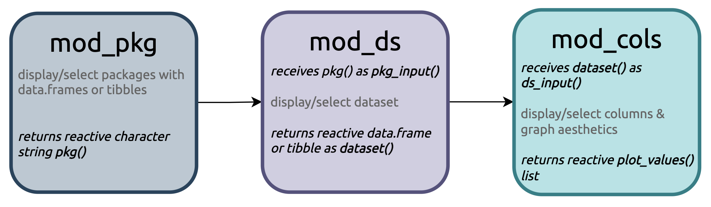
The updated plot_values() reactive list is passed to the plot_inputs argument mod_plot (where the graph is rendered).
I’ve included the call to renderPlot() with gg_color_scatter_facet() in the code block below for reference:
The error I’m seeing is telling me there is something wrong with the facet variable in mod_plot:
race1 is the facet variable from the NHANES data, so I am assuming the plot_inputs() list isn’t updating when I change input$pkg in mod_pkg to palmerpenguins.
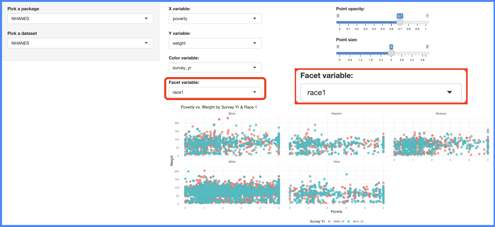
NHANES::NHANES data and columnspkgDataApp() automatically loads with NHANES::NHANESthe plot_values() list would contain the updated penguins data (from mod_ds), and the penguins columns (from mod_cols).
If the penguins data is updated in plot_values() before the columns and graph aesthetics, then why is the facet variable causing the error?
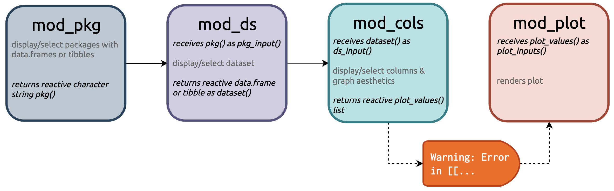
pkgDataApp()pkgDataApp()?There are hints to what is causing the warning/error in the call stack. Frame 1. through .6 of show the initialization of the ggplot2 graph, but frame .7 references the facet layout:
Backtrace:
▆
1. ├─base (local) `<fn>`(x)
2. ├─ggplot2:::print.ggplot(x)
3. │ ├─ggplot2::ggplot_build(x)
4. │ └─ggplot2:::ggplot_build.ggplot(x)
5. │ └─layout$setup(data, plot$data, plot$plot_env)
6. │ └─ggplot2 (local) setup(..., self = self)
7. │ └─self$facet$compute_layout(data, self$facet_params)Frame .7 is a hint because it tells me where/when the facet layer is referenced in the call stack.
If I look down to frame 23., I see race1 (the facet variable) and the data masking method used to find the facet variable in the custom ggplot2 function (.data[[facet_var]]):
The stack ends in a call to rlang::abort_data_pronoun() (because race1 isn’t in .data).
The order of the frames in the stack trace is counter-intuitive, because the facet variable (.data[[facet_var]]) is added to the ggplot2 graph after the x, y, and color variables (I’ve included this portion of gg_color_scatter_facet() below):
# has both color and facet vars
ggplot2::ggplot(
data = df,
mapping = ggplot2::aes(
x = .data[[x_var]],
y = .data[[y_var]])
) +
# points layer
# add ... for alpha and size passed to points
ggplot2::geom_point(
ggplot2::aes(
colour = .data[[col_var]],
group = .data[[col_var]]), ...
) +
# add facet layer
ggplot2::facet_wrap(ggplot2::vars(.data[[facet_var]])) +
# add labels
# ...x and y are in the initial aes() layercolour layer is added with the geom_point()facet_wrap() layerWhen I change the package input in mod_pkg, I’m assuming the plot_values() list is updated with the penguins data, followed by the column arguments from mod_cols.
But the column values are still from the NHANES data, which is triggering the warning. The warning/error is eventually resolved when the penguins column inputs make their way from mod_cols to mod_plot (where the plot is rendered).
Now I’m ready to experiment with plot_values and gg_color_scatter_facet() in the debugger:
Below I’ve create plot_values_test, with penguins assigned to df, and the NHANES columns assigned to the column arguments:
I’ll pass the plot_values_test list to the gg_color_scatter_facet() function, but with a call to browser():
The first few steps take me through the control flow in gg_color_scatter_facet().
# are both col_var and facet_var NULL?
Browse[1]> n
debug at ~/tsap/R/utils_scatter.R#452: if (is.null(col_var) & is.null(facet_var)) {# facet_var NULL?
Browse[2]> n
debug at ~/tsap/R/utils_scatter.R#452: if (!is.null(col_var) & is.null(facet_var)) {At this step, I can see the values for col_var and facet_var are present in the function Environment:
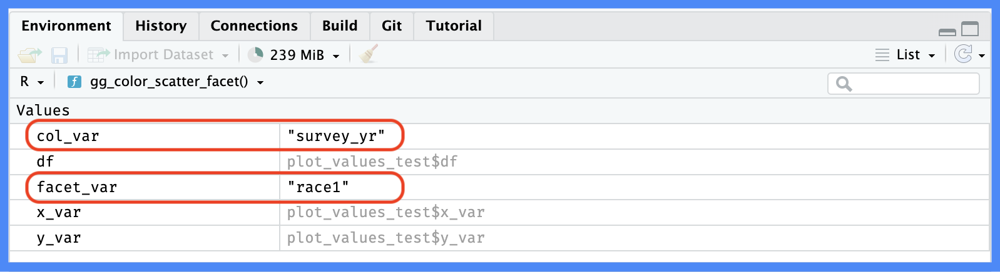
gg_color_scatter_facet()gg_color_scatter_facet()I continue stepping through the control flow until I arrive at the ggplot2 function:
# col_var NULL?
Browse[2]> n
debug at ~/tsap/R/utils_scatter.R#452: if (is.null(col_var) & !is.null(facet_var)) {When I arrive at the ggplot2 functions, I’ll see this code highlighted in the Source pane,
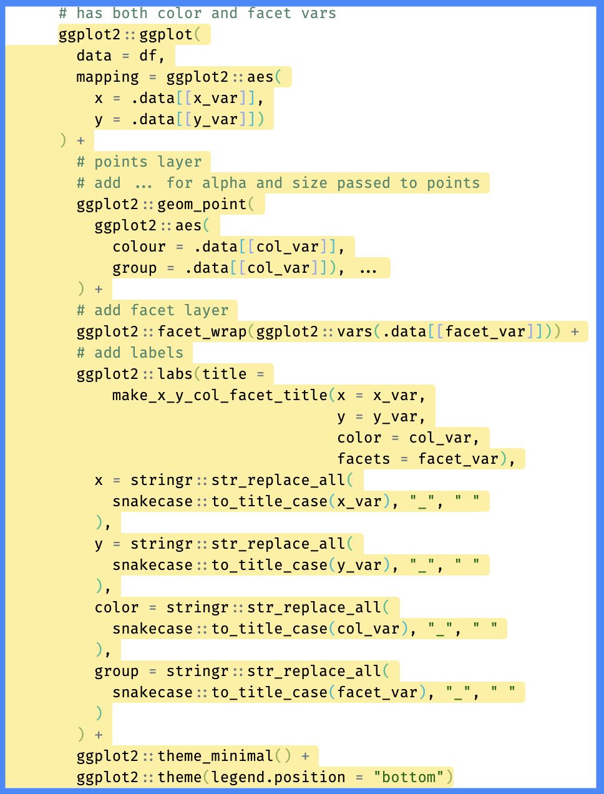
gg_color_scatter_facet()ggplot2 code in gg_color_scatter_facet()When I attempt to execute this step, I see the error:
Browse[2]> n
Error in `.data[["race1"]]`:
! Column `race1` not found in `.data`.
Run `rlang::last_trace()` to see where the error occurred.The error in the debugger tells me that when I update the package in mod_pkg, the dataset (from mod_ds) is updated in plot_values() before the column values (from mod_cols).
This explains why the error I’m seeing is referring to data masking (.data[["race1"]]), because in gg_color_scatter_facet(), when .data changes to penguins, the facet_var is still race1.
I have a few options for dealing with this warning. I can rewrite the custom ggplot2 function to only execute if all of the column arguments are present in .data. This can be implemented using something like graph_check() below:
graph_check() will search the names of df to confirm the values provided in the column arguments are present.
I can confirm this with plot_values_test (the list with penguins data and NHANES columns) and plot_values (a list with NHANES data and columns).
Check mismatched data and columns:
! Columns not in .dataplot_values list:graph_check():✔ Plot rendersI can also separate the graph aesthetic variables (x_var, y_var, col_var, and facet_var) from the two graph aesthetic values (alpha and size). I’ve implemented this solution in the mod_vars and mod_graph modules, which you can view below:
mod_vars_ui <- function(id) {
ns <- shiny::NS(id)
shiny::tagList(
shiny::fluidRow(
column(
width = 6,
shiny::selectInput(
inputId = ns("x"),
label = "X variable:",
choices = NULL
),
shiny::selectInput(
inputId = ns("y"),
label = "Y variable:",
choices = NULL
)
),
column(
6,
shiny::selectInput(
inputId = ns("col"),
label = "Color variable:",
choices = NULL
),
shiny::selectInput(
inputId = ns("facet"),
label = "Facet variable:",
choices = NULL
)
)
)
)
}
mod_vars_server <- function(id, ds_input) {
shiny::moduleServer(id, function(input, output, session) {
pkg_data <- shiny::reactive({
janitor::clean_names(ds_input())
}) |>
shiny::bindEvent(ds_input(),
ignoreNULL = TRUE
)
shiny::observe({
num_vars <- pull_numeric_cols(df = pkg_data())
shiny::updateSelectInput(session,
inputId = "x",
choices = num_vars,
selected = num_vars[1]
)
}) |>
shiny::bindEvent(pkg_data(),
ignoreNULL = TRUE
)
shiny::observe({
num_vars <- pull_numeric_cols(df = pkg_data())
shiny::updateSelectInput(session,
inputId = "y",
choices = num_vars,
selected = num_vars[2]
)
}) |>
shiny::bindEvent(pkg_data(),
ignoreNULL = TRUE
)
shiny::observe({
col_vars <- pull_binary_cols(df = pkg_data())
shiny::updateSelectInput(session,
inputId = "col",
choices = col_vars,
selected = col_vars[1]
)
}) |>
shiny::bindEvent(pkg_data(),
ignoreNULL = TRUE
)
shiny::observe({
facet_vars <- pull_facet_cols(df = pkg_data())
shiny::updateSelectInput(session,
inputId = "facet",
choices = facet_vars,
selected = facet_vars[1]
)
}) |>
shiny::bindEvent(pkg_data(),
ignoreNULL = TRUE
)
df_vars <- shiny::reactive({
cols <- c(input$x, input$y, input$col, input$facet)
if (sum(cols %in% names(pkg_data())) == 4) {
dplyr::select(
.data = pkg_data(),
dplyr::all_of(c(
input$x, input$y,
input$col, input$facet
))
)
}
}) |>
shiny::bindEvent(
c(
pkg_data(),
input$x, input$y,
input$col, input$facet
),
ignoreNULL = TRUE
)
return(
shiny::reactive({
cols <- c(input$x, input$y, input$col, input$facet)
if (sum(cols %in% names(pkg_data())) == 4) {
dplyr::select(
.data = pkg_data(),
dplyr::all_of(c(
input$x, input$y,
input$col, input$facet
))
)
}
}) |>
shiny::bindEvent(
c(
pkg_data(),
input$x, input$y,
input$col, input$facet
),
ignoreNULL = TRUE
)
)
})
}mod_graph_ui <- function(id) {
ns <- shiny::NS(id)
shiny::tagList(
shiny::fluidRow(
shiny::column(
width = 6,
shiny::sliderInput(
inputId = ns("alpha"),
label = "Point opacity:",
min = 0, max = 1, step = 0.1,
value = 0.7)
),
shiny::column(
width = 6,
shiny::sliderInput(
inputId = ns("size"),
label = "Point size:",
min = 0, max = 5,
step = 0.2,
value = 3)
)
),
shiny::fluidRow(
shiny::column(
width = 12,
shiny::plotOutput(outputId = ns("graph"))
)
)
)
}
mod_graph_server <- function(id, graph_inputs) {
shiny::moduleServer(id, function(input, output, session) {
output$vals <- shiny::renderPrint({
c(input$alpha, input$size)
}) |>
shiny::bindEvent(graph_inputs(),
ignoreNULL = TRUE)
shiny::observe({
output$graph <- shiny::renderPlot({
gg_scatter_color_facet(
df = graph_inputs(),
x_var = names(graph_inputs())[1],
y_var = names(graph_inputs())[2],
col_var = names(graph_inputs())[3],
facet_var = names(graph_inputs())[4],
alpha = input$alpha,
size = input$size)
})
}) |>
shiny::bindEvent(graph_inputs(),
input$alpha, input$size,
ignoreNULL = TRUE)
})
}These are added to appUI() and appServer() the same way I used the mod_cols and mod_plot modules, and results in the following:
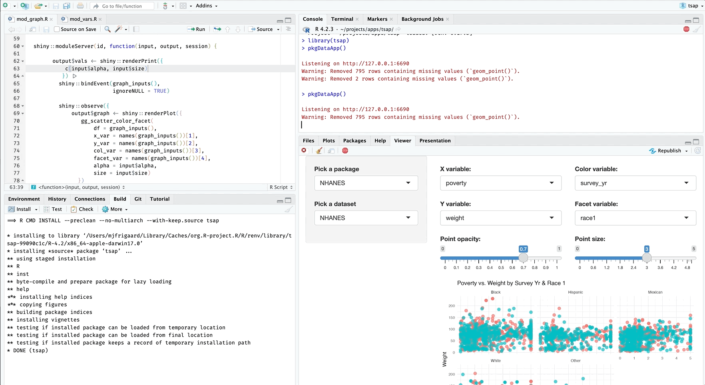
mod_vars and mod_graph in pkgDataApp() errormod_vars and mod_graphI can see the warning/error is no longer displayed in UI or the Console.
A second option is using the gargoyle package from Colin Fay. This package is designed to provide ‘Event-Based Structures for Shiny’, and it works like so:
In appServer(), I use gargoyle::init() to initiate a series of ‘trigger flags’ and a environment (env_vars) to store the function values:
Then I use gargoyle::trigger() and gargoyle::watch() to link the modules together in a ‘reactive daisy-chain’:
# pkg module ----
shiny::observe({
env_vars$pkg <- mod_pkg_server("pkg")
return(env_vars$pkg)
gargoyle::trigger("tf_ds")
}) |>
shiny::bindEvent(env_vars)
# dataset module ----
shiny::observe({
env_vars$dataset <- mod_ds_server("ds",
pkg_input = env_vars$pkg
)
return(env_vars$dataset)
gargoyle::trigger("tf_cols")
}) |>
shiny::bindEvent(
gargoyle::watch("tf_ds")
)
# column select module ----
shiny::observe({
env_vars$plot_values <- mod_cols_server(
id = "cols",
ds_input = env_vars$dataset
)
return(env_vars$plot_values)
gargoyle::trigger("tf_plot")
}) |>
shiny::bindEvent(
gargoyle::watch("tf_cols")
)
# plot module ----
shiny::observe({
mod_plot_server("plot",
ds_input = env_vars$dataset,
col_inputs = env_vars$plot_values
)
}) |>
shiny::bindEvent(
gargoyle::watch("tf_plot")
)I’ve deployed a version of this application here in showcase mode so you can review the modules, ui, and server.